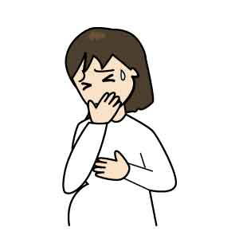

鍼灸、整骨、接骨、美容鍼灸、マッサージ、整体、カイロプラクティック、O脚矯正、不妊、エステでお困りの方はTeaching Beauty鍼灸マッサージ整骨院へ。
電話でのご予約・お問い合わせはTEL.03-6413-7803
〒154-0014 東京都世田谷区新町3-21-1さくらウェルガーデン301号室
つわりBreech treatment
つわりとは
次のようないろいろな説がありますが、明らかな原因は不明とされています。1.妊娠すると、胎盤の絨毛組織からhCG（ヒト絨毛性ゴナドトロピン）というホルモンが大量に産されます。それが脳の嘔吐中枢を刺激するために吐き気が起きると言われています。
2.「半分がご主人の遺伝子（DNA）で構成されている胎児」を異物と感じる拒絶反応の現れであるとする説もあります。愛するご主人のDNAであるのに、拒絶とは悲しい説ですね。
3.他にも人間関係（嫁・姑）や生活環境、お腹の中の赤ちゃんへの不安 などのストレスが関係しているとも言われています

つわりの症状として代表的なのが吐き気です。よくドラマなどでも見られるシーンですが、症状が軽い人もいれば重い方もいらっしゃいます。症状が重い方の場合、嘔吐を繰り返し、口に物を入れられない状態になり、脱水症状や餓死状態になる場合があります。症状が重い場合はすぐに医師に相談しましょう。
そして、においに敏感になります。今まで大丈夫だったタバコのにおいや生活臭、食べ物のにおいに対して嫌悪感を感じる事が多くなるでしょう。炊飯器の蒸気が苦手な方も多いですね。タバコは胎児にも悪い影響を与えるので、タバコを吸う方はこの機会に禁煙しましょう
食の好みの変化もあります！
今まで食べる事の出来なかった食べ物が食べられるようになったり、逆に好きだった食べ物が嫌いになったりする事がります。この変化は出産後もずっと続く方もいらっしゃいます
【つわり治療】
初回の治療後から吐き気が無くなり、食事を美味しく食べられるようになったり、相談の多い「よだれ」が減ったり、気分が良くなったりと劇的な効果を挙げることもしばしばあります。
つわりのみならず、妊娠中に治療を行うことは、今ある症状を改善するだけではなく、出産に向けた身体の調節や、お腹の中にいる赤ちゃんの治療ができます。お母さんの状態を良くするという事は、赤ちゃんにもよい影響を与え、病気にかかりにくい元気な子供が生まれてきます。
治療間隔は症状が激しければ週２回以上行います。さほどひどくなければ週に１回です。回復してくればもっと間隔を空けていきます。
つわりでお悩みのようでしたら、まずは電話やﾒｰﾙにて無料相談をご利用下さい。
使用イラスト(c)フリーメディカルイラスト図鑑
逆子・つわり
| １回 | \45,000(税別) |
|---|---|
Ｔｅａｃｈｉｎｇ Ｂｅａｕｔｙ

〒154-0014
東京都世田谷区新町3-21-1
さくらウェルガーデン3F
TEL：
03-6413-7803
→アクセス
診療時間
通常診療
月火金土日／9:00〜13:00
木曜日 ／15:00〜19:00
※当日予約可。
夜間診療
月火木金土／19:00〜23:00
※通常価格の1.5倍料金
※当日の19時までにご予約の場合のみ
深夜・早朝診療
月火木金土／23:00〜翌9:00
※通常価格の2倍料金
※当日の19時までにご予約の場合のみ
休診日
水、木（午前）、日、祭日
交通事故・労災・
各種保険取扱い